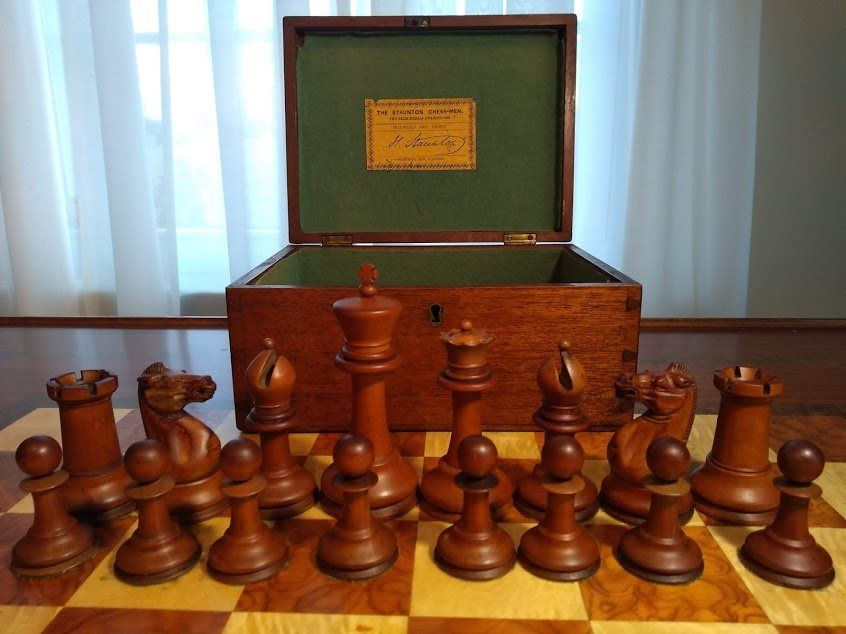
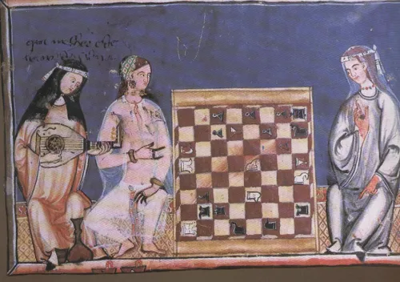
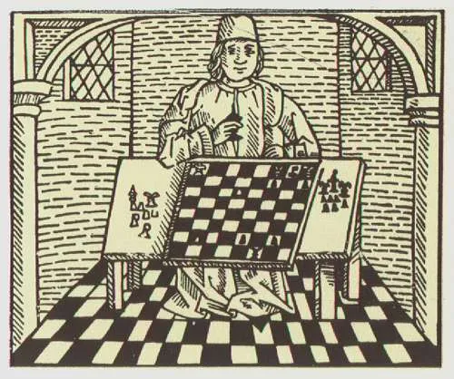
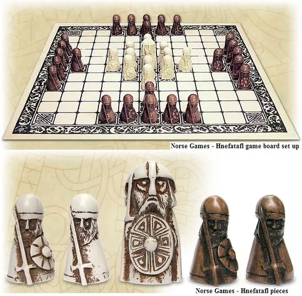
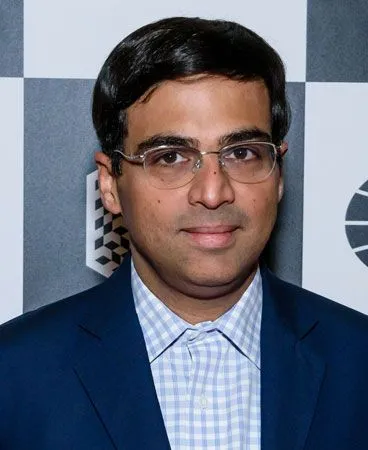
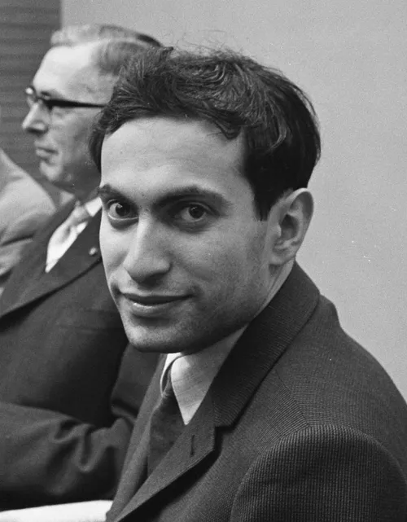

As Ujjwal Bindal, a proud student at IIT Bombay, I'm all about movies, flute tunes, and causing havoc on the chessboard! Chess isn't just a game—it's my secret weapon for world domination (well, at least on the 64 squares). While my friends are busy with checkmates, I'm plotting my next move like a chess ninja, strategizing over how to sneakily capture their queens. Whether it's a quick game between classes or an epic battle that lasts till dawn, chess keeps my brain buzzing and my opponents guessing. It's not just a hobby; it's my quest to conquer the kingdom of the black and white squares! From epic clashes to hilarious stalemates, every move teaches me something new—and keeps me laughing along the way!.
Chess, the ancient game of kings and intellectuals, captivates with its timeless allure. Each match unfolds like a battlefield where strategy reigns supreme. The sixty-four squares become a canvas for tactical brilliance, where every move carries weighty consequences. From the opening gambits to the endgame maneuvers, chess demands foresight, calculation, and creativity. It's a mental gymnasium, sharpening analytical prowess and fostering patience in equal measure. Yet, beyond its cerebral challenges, chess fosters camaraderie and sparks lifelong friendships. Whether played casually or competitively, it's a journey of discovery—a pursuit where mastery is elusive yet endlessly rewarding, offering insights into the complexities of life itself.
History of chess
Chess has a long and storied history. The game has changed quite a bit from its earliest forms in India. The modern iteration we enjoy today wasn't known until the 16th century. There were no clocks, and the pieces were not standardized until the 19th century.
The official world championship title came into existence by the late 19th century, shortly after the first big tournaments were held and multiple styles of play had begun to fully develop. Although the first book on openings was published as early as 1843, theory as we know it didn't truly evolve until the early/mid 20th century. Computer engines and databases didn't come into play until the very late 20th century.
Origin :- Chess, as we know it today, was born out of the Indian game chaturanga before the 600s AD. The game spread throughout Asia and Europe over the coming centuries, and eventually evolved into what we know as chess around the 16th century. One of the first masters of the game was a Spanish priest named Ruy Lopez. Although he didn't invent the opening named after him, he analyzed it in a book he published in 1561. Chess theory was so primitive back then that Lopez advocated the strategy of playing with the sun in your opponent's eyes!

chess-theory:- Chess theory moved at a snail's pace until the mid 18th century. In 1749, the French Master Francois-Andre Philidor stepped onto the scene with his book titled Analyse du jeu des Échecs. This book covered some new opening ideas (including the defense which still bears his name), and also contained Philidor's famous defense in rook and pawn endgames - an endgame technique that is still used today. Philidor's famous statement that "The pawns are the soul of chess" was first introduced to the world in this book.
Chess continued to gain popularity throughout the world, and in the mid 19th century the standardization of chess sets occurred. Before the 1850s, chess sets weren't uniform at all. In 1849, Jaques of London (a manufacturer of games and toys) introduced a new style of pieces created by Nathaniel Cooke. These same pieces were endorsed by Howard Staunton, the strongest player of his time. This new style of pieces, known as the Staunton pattern, became instantly popular and were used in tournaments and clubs all over the world. The Staunton pieces, and minor variations of it, are still considered to be the standard for tournament chess sets.
history of chess Jaques Staunton set
An early Jaques Staunton set. Photo: Chess.com member, GoodKnightMike
The 19th century also marked the introduction of chess clocks to competitive play. Before chess clocks became the norm, a single game could last up to 14 hours! With the standardization of chess sets and introduction of chess clocks, the equipment needed for modern matches and tournaments were set in place.
Chess, itself, was developing greatly during the 1800s. The most famous games of this time period were swashbuckling attacking games - strong defensive ideas hadn't been learned yet. If a player wasn't sacrificing their pieces right and left trying to checkmate their opponent in a violent manner, then it wasn't a fun game! It was during this attacking era in chess that the American player Paul Morphy entered the scene.
history of chess Paul Morphy
Paul Morphy, the embodiment of romantic and aggressive play. Photo: Wikipedia
Morphy was the embodiment of all of these romantic and aggressive attacking ideas. During his tour of Europe, Morphy soundly trounced every major player in the world except Howard Staunton (who was past his prime and didn't accept Morphy's challenge). Morphy steamrolled Adolf Anderssen, Louis Paulsen, Daniel Harrwitz, and a host of other masters. In 1858, the famous "Opera House" game was played by Morphy vs the allies (the Duke of Brunswick and a French Count), and is considered one of the best games of all time. Morphy throws everything, including the proverbial kitchen sink, at his opponents. A beautiful game for the ages!



Rules of Chess
Each of the 6 different kinds of pieces moves differently. Pieces cannot move through other pieces (though the knight can jump over other pieces), and can never move onto a square with one of their own pieces. However, they can be moved to take the place of an opponent's piece which is then captured. Pieces are generally moved into positions where they can capture other pieces (by landing on their square and then replacing them), defend their own pieces in case of capture, or control important squares in the game.
Arrangement of Peices
The chess pieces are then arranged the same way each time. The second row (or rank) is filled with pawns. The rooks go in the corners, then the knights next to them, followed by the bishops, and finally the queen, who always goes on her own matching color (white queen on white, black queen on black), and the king on the remaining square.
How to move the king
The king is the most important piece, but is one of the weakest. The king can only move one square in any direction - up, down, to the sides, and diagonally. The king may never move himself into check (where he could be captured). When the king is attacked by another piece this is called "check".
How to move the Queen
The queen is the most powerful piece. She can move in any one straight direction - forward, backward, sideways, or diagonally - as far as possible as long as she does not move through any of her own pieces.
And, like with all pieces, if the queen captures an opponent's piece her move is over. Notice how the white queen captures the black queen and then the black king is forced to move.
How to move the Rook
The rook may move as far as it wants, but only forward, backward, and to the sides.
How to move the Bishop
The bishop may move as far as it wants, but only diagonally. Each bishop starts on one color (light or dark) and must always stay on that color.Bishops work well together because they cover up each other's weaknesses.
How to move the Knight
Knights move in a very different way from the other pieces – going two squares in one direction, and then one more move at a 90-degree angle, just like the shape of an “L”.Knights are also the only pieces that can move over other pieces.
How to move the Pawns
Pawns are unusual because they move and capture in different ways: they move forward but capture diagonally. Pawns can only move forward one square at a time, except for their very first move where they can move forward two squares. Pawns can only capture one square diagonally in front of them. They can never move or capture backward. If there is another piece directly in front of a pawn he cannot move past or capture that piece.
Stalemate
Occasionally chess games do not end with a winner, but with a draw. There are 5 reasons why a chess game may end in a draw:
The position reaches a stalemate where it is one player's turn to move, but his king is NOT in check and yet he does not have another legal move:
The players may simply agree to a draw and stop playing
There are not enough pieces on the board to force a checkmate (example: a king and a bishop vs. a king
A player declares a draw if the same exact position is repeated three times (though not necessarily three times in a row)
Fifty consecutive moves have been played where neither player has moved a pawn or captured a piece
en pasant
The last rule about pawns is called “en passant,” which is French for “in passing”. If a pawn moves out two squares on its first move, and by doing so lands to the side of an opponent's pawn (effectively jumping past the other pawn's ability to capture it), that other pawn has the option of capturing the first pawn as it passes by.
Highlights
1. For me one of the memorable moments was when Gukesh won the CANDIDATES last year, he is the youngest to acheive this great feat.
Faviroute Players

Vishwanath Anand
Viswanathan "Vishy" Anand (born 11 December 1969) is an Indian chess grandmaster, a former five-time World Chess Champion[2] and a record two-time Chess World Cup Champion.[3] He became the first grandmaster from India in 1988, and he has the eighth-highest peak FIDE rating of all time.[4] In 2022, he was elected the deputy president of FIDE
Magnus Charlsen
Sven Magnus Øen Carlsen[a] (born 30 November 1990) is a Norwegian chess grandmaster. Carlsen is a five-time World Chess Champion, the reigning five-time World Rapid Chess Champion, the reigning seven-time World Blitz Chess Champion, and the reigning Chess World Cup Champion.

Mikhail Tal
Mikhail Nekhemyevich Tal (9 November 1936 – 28 June 1992)[1] was a Soviet and Latvian chess player and the eighth World Chess Champion. He is considered a creative genius and is widely regarded as one of the most influential players in chess history. Tal played in an attacking and daring combinatorial style. His play was known above all for improvisation and unpredictability.
Start
Best Way to Start a Chess Game:-
For a beginner player, the best way to start a game is to first learn what options they have at their disposal. Here doing two things gives the best return on investment. One Is to learn the basic rules and the other is to explore chess opening principles.
Learn the basic rules:-
Every player starts to play chess by learning the basic rules. Without this, a legal game is not possible.
So, it is imperative that a beginner player goes through the process of understanding and absorbing the basic rules. This helps to set the foundation for future knowledge.
Opening Principles:-
After completing the above step, the player can delve into the world of openings. Chess opening principles teach a player how to open a chess game. All chess games start with the opening moves. An ‘opening’ in chess is a combination of moves from both sides with an underlying strategy.
A beginner player should also be careful not to be caught in the vast number of opening options. A natural question is there are so many openings for White and Black then how to choose the correct one?
You can tackle this question by breaking down this part into two sides.
Read up on chess strategy:-
Once a player learns how to start a chess game then the next logical step is to learn how to conduct a game.
A player plays familiar moves in the start but at some point, he will exhaust his knowledge. At this point, he will have to rely on a basic strategy.
This basic strategy stems from the basic understanding of the game. Therefore a player who has a better basic understanding will play better strategically than the player who doesn’t.
There are many ways to learn chess strategy. Here at TheChessWorld, we have many Beginner-friendly strategy courses to get you started on chess strategy.
Play Chess With Computer and Friends:-
Continuous gameplay is the sure-shot way to play better. There are many mediums where one can find a game to play.
The easiest and quickest way is to ask friends. Playing with them also increases the fun factor and competition.
Another quick way to start a chess game is to play with the computer. There are many online servers for playing chess.
To get a game going a player has to select the time control and then the chess game starts automatically.
questions
A small quiz on Chess
Q1. who is the first person to get the G.M. title?
Q2. who is the yongest person to get the G.M. title
Q3. who is the oldest person to get the G.M. title
Q4. who is the first women person to get the G.M. title